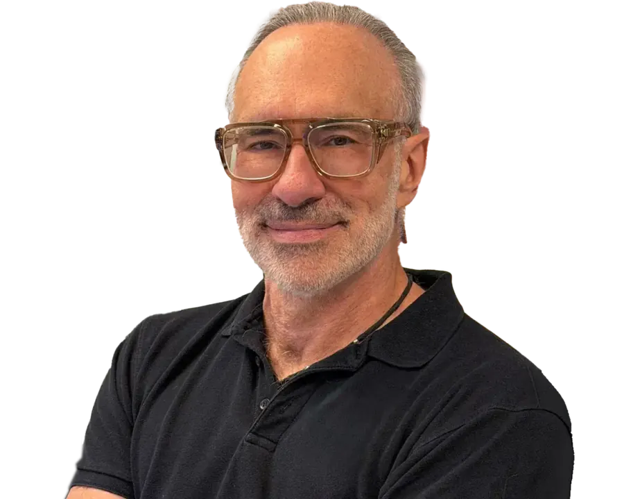
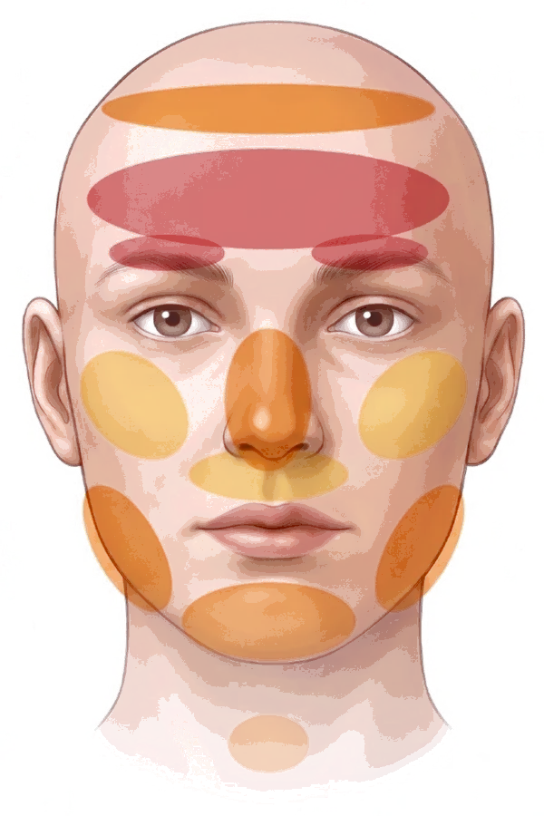
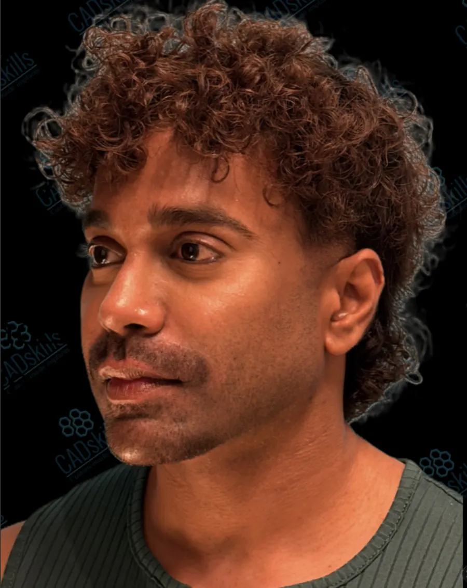
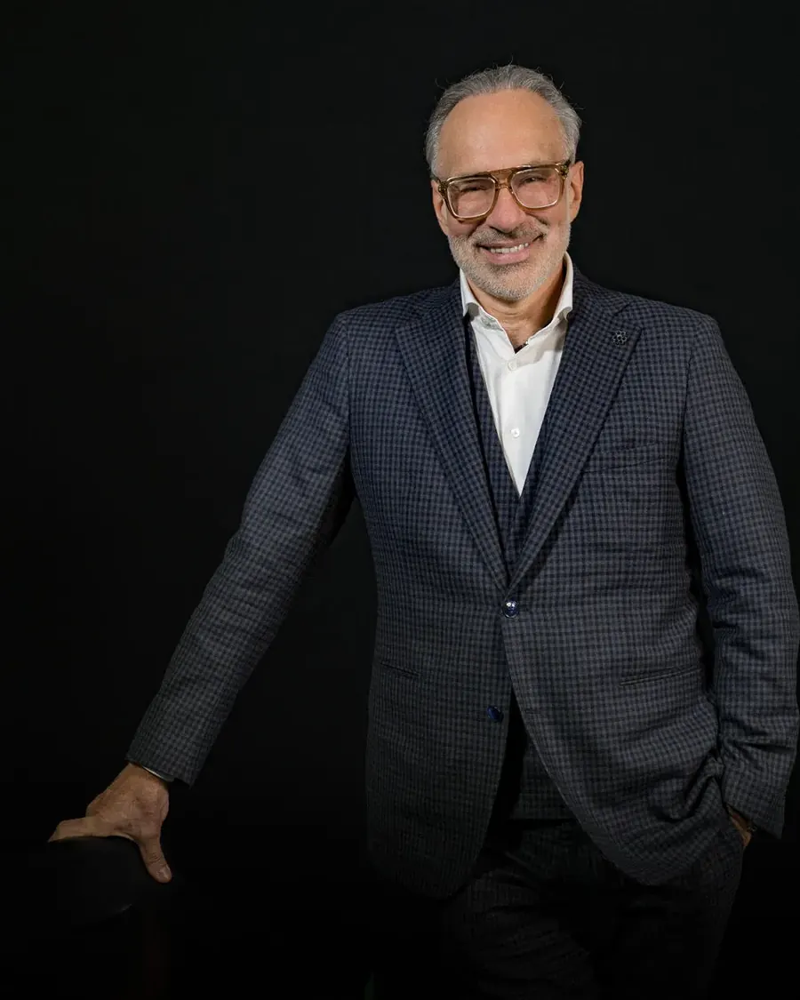
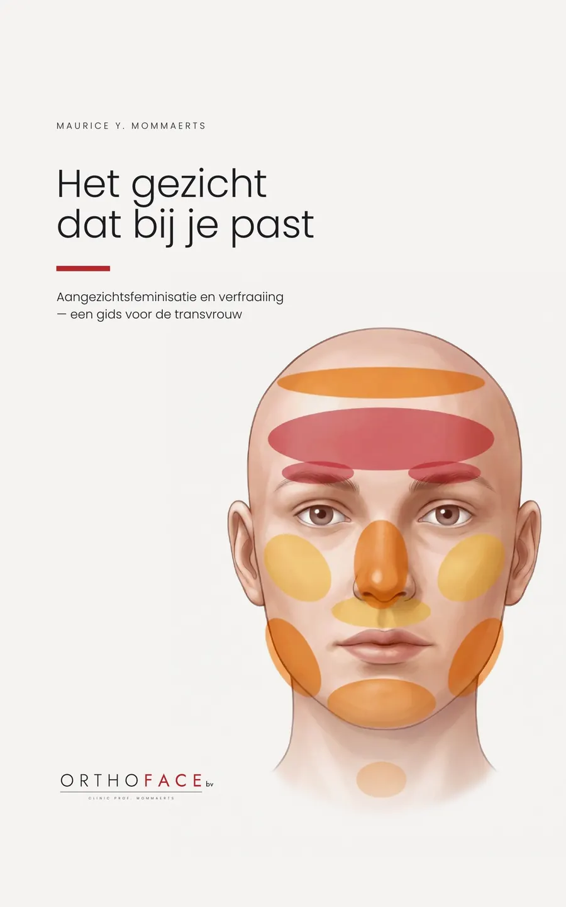

Des résultats naturels, qui vous ressemblent.
Le Pr Maurice Y. Mommaerts, chirurgien du visage de renommée internationale, allie excellence chirurgicale et approche artistique.

- 30+ans d'expérience
- 20 000+interventions réalisées
- 300+publications scientifiques
- 150+pays d'origine des patients
- Consultation sur place ou en vidéo
- Tarifs tout compris
- Patients de plus de 150 pays
Par où commencer ? Touchez une zone du visage.
Chaque zone ouvre les interventions possibles, leur durée et les résultats de patients.

Du lifting à la chirurgie des mâchoires, tout le visage.
Chirurgie orthognathique & implants sur mesure
Pionnier des solutions implantaires sur mesure : implants conçus individuellement à partir d'un scanner, mâchoires repositionnées en une seule intervention.

Lifting du visage et du cou
- Deep plane, SMAS ou suspension
- Lifting endoscopique « sans cicatrice visible »
- Front, sourcils, lèvre supérieure
Chirurgie des paupières
- Blépharoplastie supérieure
- Blépharoplastie inférieure
Rhinoplastie
- Totale, secondaire ou ethnique
- Bosse, pointe, septoplastie
Féminisation du visage
- Front, ligne des cheveux, nez
- Mâchoire, menton, pomme d'Adam
Menton et contours
- Mentoplastie
- Angle mandibulaire, pommettes
- Correction des oreilles
Lipofilling & injectables
- Lipofilling, liposuccion, bichectomie
- Botox, produits de comblement

 Avant
12 mois après
Avant
12 mois après
Faites glisser, comparez.
Des cas avant-après, publiés avec l'autorisation des patients. Des résultats naturels qui allient fonction et esthétique.
Le lifting cervico-facial en plan profond améliore la ligne mandibulaire, les bajoues et le tiers moyen du visage en repositionnant les tissus mous descendus.

Trente ans de chirurgie, d'enseignement et de recherche.
Une autorité internationale de premier plan en chirurgie orthognathique, orthofaciale et maxillofaciale esthétique.
- Chirurgien cranio-maxillo-facial certifié par le European Board
- Ancien professeur à la Vrije Universiteit BrusselAncien directeur du programme de formation en chirurgie maxillo-faciale
- Président d'honneur de l'EACMFSAssociation Européenne de Chirurgie Cranio-Maxillo-Faciale
- Auteur de 3 livres et de plus de 300 publications
Quatre étapes, de la consultation au suivi.
- 1
Consultation
À la clinique d'Anvers ou en vidéo, sur rendez-vous.
- 2
Plan sur mesure
Un devis personnalisé. Plusieurs interventions combinées coûtent moins que la somme des prix séparés.
- 3
Intervention
Au Face Ahead Surgicentre, avec un prix tout compris.
- 4
Suivi inclus
Contrôles le lendemain, à 7 et 14 jours, puis à 3 mois selon l'intervention.
Des prix tout compris, sans surprise.
Tout compris
Le prix de chaque intervention inclut :
- Anesthésie
- Bloc opératoire
- Médicaments
- Colle de fibrine
- Consommables
- Contrôles de suivi
Belgique et international
Pour les patients belges, les honoraires chirurgicaux sont généralement pris en charge par l'INAMI et une assurance privée complémentaire.
Les implants sur mesure font l'objet d'un devis séparé, établi pour chaque cas.
Demander la grille des tarifs
Nouveau livre
Le visage qui vous ressemble
Féminisation et embellissement du visage : un guide pour les femmes trans. Livre numérique en cinq langues dès le 16 novembre 2026, livre broché dès le 15 décembre 2026.
Avant de prendre rendez-vous.
Une autre question ? Notre équipe vous répond au +32 3 500 10 05
Puis-je consulter sans me déplacer ?
Que comprend le prix d'une intervention ?
Puis-je combiner plusieurs interventions ?
Les interventions sont-elles remboursées en Belgique ?
Quelle TVA s'applique ?
Je viens de l'étranger, comment faire ?
Prêt(e) à commencer votre parcours ?
Laissez-nous vos coordonnées : l'équipe du Pr Mommaerts vous recontacte pour fixer une consultation, sur place ou en vidéo.
- Téléphone
- +32 3 500 10 05
+32 3 500 10 07 - info@mauricemommaerts.eu
Demandez Mme Tatjana Schenkels - Adresse
- Face Ahead Clinic
Van Putlei 35A, 2018 Anvers